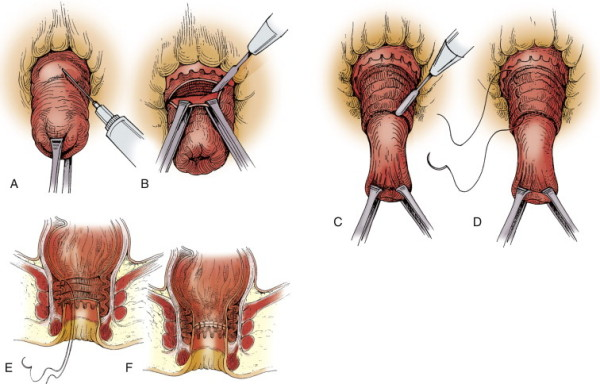
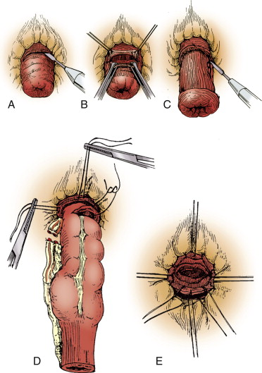

Rectal Prolapse (and
Obstructive Defecation)
DEFINITION
Full thickness prolapse of the
rectum beyond the anus.
- ie not if just mucosa and not if inside anus
Obstructive defecation is
the inability to pass a bowel motion due to pelvic floor
abnormalities; functional or structural.
D E A B M I M
EPIDEMIOLOGY
Rectal Prolapse
Chronic constipation and straining
6:1 F/M
Older
D E A B M I M
AETIOLOGY
See below
D E A B M I M
BIOLOGICAL BEHAVIOUR
Pathophysiology : Rectal Prolapse
Unclear but strongly
associated with:
Functional Association
Chronic constipation and straining
Anatomical Associations:
Deep Pouch of Douglas
Redundant sigmoid colon.
Pelvic floor weakening
Internal and external anal floor weakening
Pudendal neuropathy
Lack of normal fixation to rectum
Difficult to know whether
functional precedes anatomical or vice versa
Pathophysiology : Obstructive
Defecation
Important to distinguish causes as treatment differs
Structural causes
- include stricture, rectocoele or enterocoele.
Functional causes
- include paradoxic contraction of the puborectalis muscle.
Rectocoele
Bulging of rectum into vagina through weak rectovaginal septum.
- septum weakens with age and parturition
<2cm = typically asymptomatic, accepted as a normal finding.
May coexist with other prolapses, sigmoidocoele, enterocoele,
intussusceptions, perineal descent.
Non-relaxing puborectalis
"Non-relaxing puborectalis syndrome"
Puborectalis sling usually contracted, causing angulation of rectum,
assisting with continence.
- relaxes with action to defecate.
Muscle contracts further as bowel passes, increasing angle of
rectum.
In this syndrome, the more the pt strains --> the less successful
the evacuation
D E A B M I M
MANIFESTATIONS
Rectal Prolapse
Complain of rectal tissue protruding from anus.
- initially only with Valsalva
- later with minimal or no straining
Occasionally rectal bleeding
Obstructive Defecation
Sensations of incomplete evacuation, excessive straining
Need for assistance to pass stool - laxatives, enemas, digital
History
Determine:
- symptom history
- stool history
- prolapse history (how much tissue, triggers)
- associated symptoms (urinary, incontinence / leak, straining)
If laxatives alone are
required to pass stool, suggests
colonic inertia.
If manual evacuation
required, may suggests rectocoele
Examination
Patulous anus frequency seen with prolapse
INVESTIGATIONS
1. DRE
- resting tone, sphincter deficits
- ask to contract then valsalva; asses puborectalis: significant if
fails to relax with strain.
2. Anoscopy
- assess for haemorrhoids, strictures, ulcers
- watch prolapse on Valsalva
3. Colonoscopy
- rule out lesions, strictures
4. Manometry
- assess sphincter complex,
+ electrophysiology to assess puborectalis relaxation.
5. Defecography
- helps diagnose paradoxical puborectalis motion.
- note rectocoeles and intussusceptions common on this study;
presence is not an indication.
7. USS
Can assess sphincter defects
8. Colonic transit studies
Diagnose colonic inertia.
Ingest markers, follow-up on D3,5,7 to follow transit
Important as if they have this, your operation will not be
effective.
D E A B M I M
MANAGEMENT
Rectal Prolapse
Conservative
Limited options.
- Fiber, laxatives - minimise straining.
- Biofeedback and pelvic floor exercises also possible.
However really only effective for mucosal prolapse and internal
intussusception; rarely successful for full-thickness prolapse.
Operative
Many options have been proposed and abandoned due to high recurrence
rates.
Generally have a perineal or
abdominal approach
Bowel prep and antibiotics are routine.
Options:
Abdominal
1. Rectopexy
2. Rectopexy with mesh
- not shown in RCTs to be superior
3. Resection rectopexy
Divide or preserve lateral
attachments?
Risk is of denervation of rectum / damage to parasympathetic
nerves.
With division of lateral ligaments
- worse constipation (25%)
- better continence (~25%)
With preservation of the lateral ligaments
- better constipation (~25%)
- better continence (~25%)
Bottom line: worse recurrence rates if preserved but that outweighed
by benefit of improved constipation
Laparoscopic or open?
No difference with regard to mortality, morbidity,
constipation, incontinence or recurrence rate
Perineal
1. Delorme's procedure
2. Altmeier perineal proctosigmoidcolectomy.
Choosing the Right Option?
Abdominal procedures preferred in healthy patients who can
tolerate the operation.
Rectal prolapse and no constipation
--> abdominal rectopexy, vicryl mesh, preservation of lateral
attachments.
- ideally laparoscopic.
Perinenal approaches preferred for those with comorbidities who
cannot tolerate GA and operation.
- higher recurrence.
- perineal proctosigmoidectomy in frail patients; lower mortality
and morbidity and recurrence cf Delorme
Recent trend toward perineal approach in younger patients; less
nerve risk.
Procedures: Description
Rectopexy
Patient lithotomy
Lower midline or Pfannensteil.
Peritoneum along rectum incised, allows access to presacral
avascular plan.
Sharp dissection down to pelvic floor.
Lateral dissection taken down only to middle hemorrhoidal vessel,
safely preserving pelvic nerves.
Anterior peritoneum preserved to free rectum
Rectum then pulled up and out of the pelvis.
Fixed to sacrum using 4-6 sutures into presacral fascia.
Negligible mortality and recurrence <3%, continence improves
- but effect on constipation not consistent.
Rectopexy
with Mesh
As above, but fixation with mesh.
Prolene or vicryl mesh fine.
Either anterior (Ripstein repair) or posterior.
Preferred:
Wrap mesh posteriorly around sides of rectum and fix to presacral
fascia in the midline.
Leaving anterior rectum to expand as necessary.
When resecting... be aware of infection risk with mesh.
Resection Rectopexy
Mobilize rectum as above
Resect redundant portion of sigmoid colon.
Do not mobilize splenic flexure; higher recurrence.
Return rectum to pelvis
Improvement in constipation is key benefit / rationale for this
approach.
Delorme
Mucosal stripping
of the rectum
General, regional or local anaesthetic.
Prolapse everted, local with adrenaline injected circumferentially
just proximal to the dentate line.
Circumferential mucosal incision 1-1.5cm proximal to dentate line.
Mucosa dissected free circumferentially to apex of prolapse.
Circular muscle then plicated, then redundant mucosa excised.
Mucosal anastomosis.
Low mortality, morbidity high 0-50%, recurrence high 5-30%.
- lead point of prolapse may be above site of mucosal dissection.

Altmeier
(Perineal Proctosigmoidectomy)
General, regional or local anesthesia.
Lithotomy, rectal prolapse everted.
Local w adrenaline and circumferential incision just above dentate,
then deepened to full thickness.
Abdo cavity entered, division of mesentery and vessels from below,
freeing up redundant sigmoid colon.
Colon divided, anastomosis via interrupted absorbable sutures.
Mortality low, morbidity 0-25%

Obstructive Defecation
Non-operative Therapy
High-fibre diet (25-35g/day, increased fluid intake)
Laxatives and enemas
Paradoxic puborectalis syndrome
Biofeedback conditioning treatment
- physiological function converted to auditory or visual cue for
patient to learn from.
- anal plug electrode in anus; connected to biofeedback device.
- patient contracts sphincters, bears down.
- with instruction, movements can become more purposeful and
effective.
--> Success rate highly variable 30-90%, not sustained and drops
to about 25% over time.
Botox
- potent neurotoxin paralyses muscles by presynaptic inhibition of
acetylcholine release.
- Injected into puborectalis, initial success perhaps 70%, drops to
33%
- Lasts three months
- Long-term efficacy may be similar to Biofeedback.
Operative Therapy
No role for surgery.
STARR proposed, to restore anatomy and function by excising
redundant tissue.
Circular stapler; pt in lithotomy
- first anterior then posterior rectal wall bites.
Overall success 60-65%, but with better exclusion criteria, reported
as high as 90%
- complicated by pain, bleeding, incontinence and recurrence.
Controversial / role unclear, may be acceptable in hands of
knowledgeable surgeon.
D E A B M I M
REFERENCES
Cameron 10th